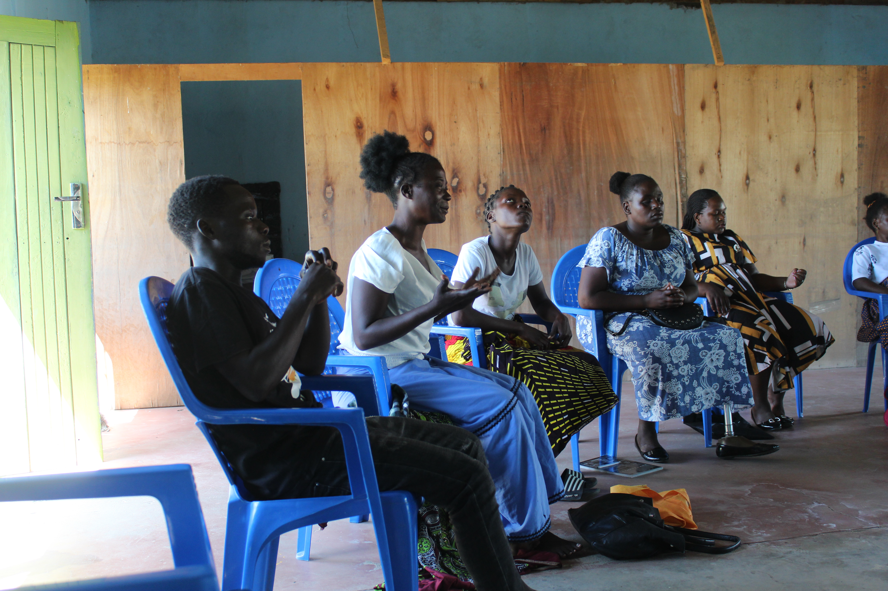

Women and girls are building confidence, claiming their rights and shaping the decisions that affect their lives.
The programme combines inclusive policy campaigns, community awareness, male-ally engagement, and evidence-based advocacy to make health, education, protection, and leadership spaces safe and accessible for all.
Empowering young people in rural communities with essential digital skills for the 21st century.
This initiative provides comprehensive computer training, internet literacy, and technology access to bridge the digital divide and create economic opportunities.
Skills for what's next ↗

Creative livelihoods
03 · Enterprise
Flower Vase Making
This initiative trains women in the production of flower vases, promoting entrepreneurship and sustainable income generation.
Key focus areas include teaching practical vase-making skills, enabling micro-business creation, and supporting local economic empowerment.
Make ideas bloom ↗
Community health
04 · Health & resilience
Soap Making Training
Supported by the U.S. Embassy and CDC guidance, this project trained communities in soap and mask production.
The programme improved hygiene and COVID-19 preparedness for 9,000 marginalized individuals by strengthening local production skills and safe-practice awareness.
 Advocacy · Inclusion
Advocacy · Inclusion